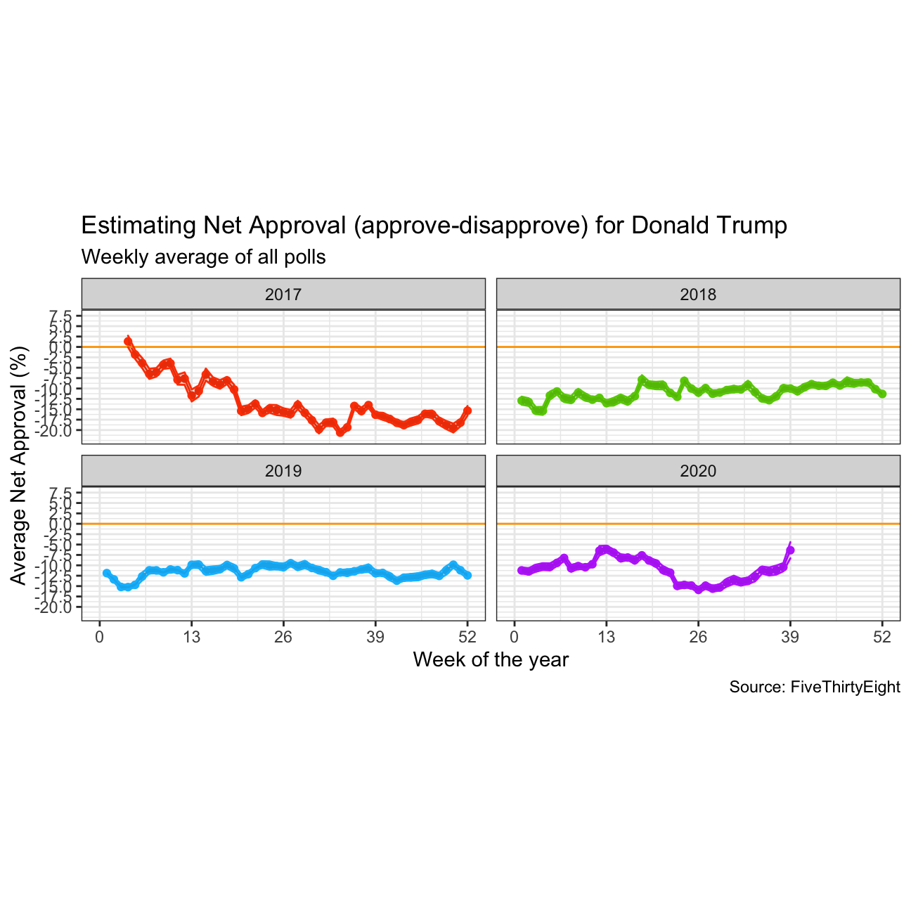
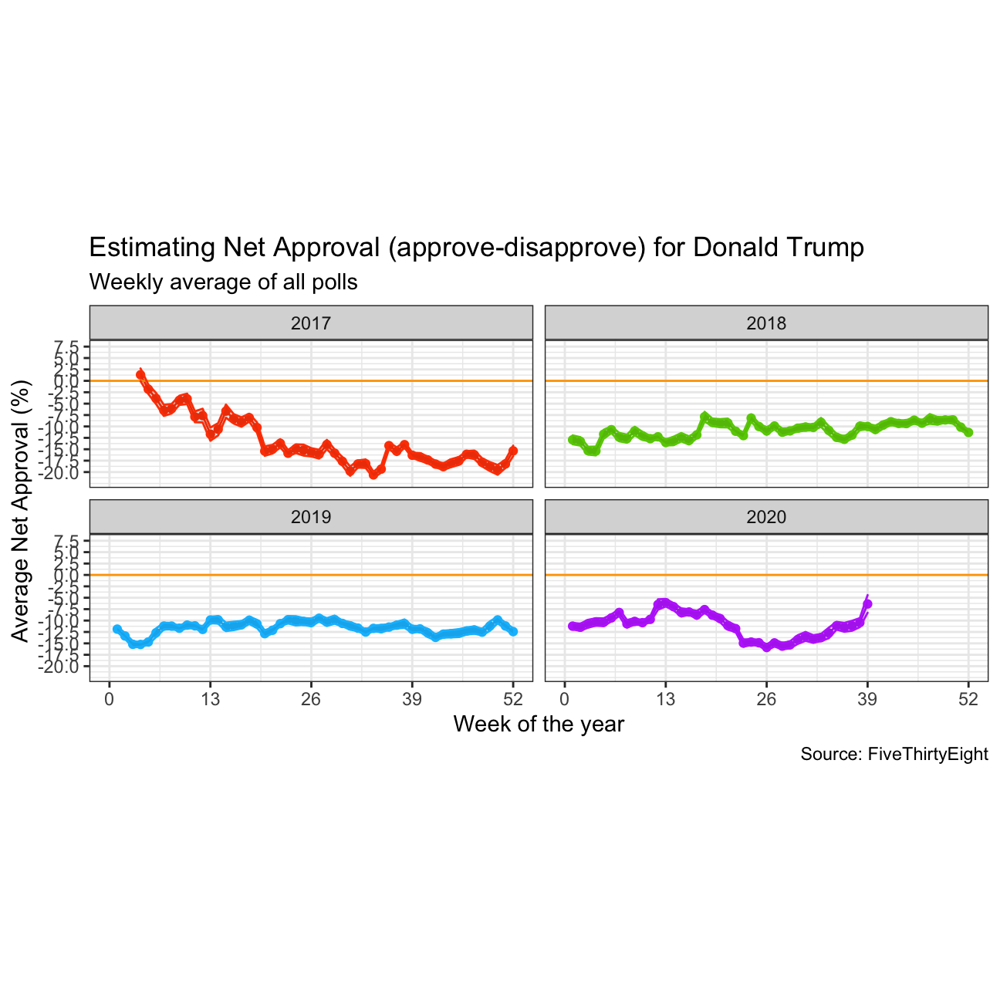
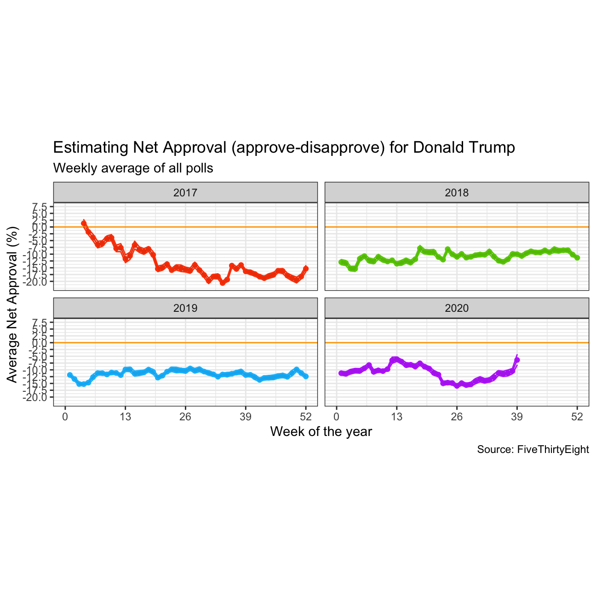

Create a plot
Using this data we will calculate the average net approval rate (approve - disapprove) for each week since Trump got into office and create a plot that looks like this one.
 

As we saw earlier, fivethirtyeight.com has detailed data on all polls that track the president’s approval
approval_polllist <- read_csv(here::here('data', 'approval_polllist.csv'))
glimpse(approval_polllist)## Rows: 15,619
## Columns: 22
## $ president <chr> "Donald Trump", "Donald Trump", "Donald Trump", "…
## $ subgroup <chr> "All polls", "All polls", "All polls", "All polls…
## $ modeldate <chr> "9/27/2020", "9/27/2020", "9/27/2020", "9/27/2020…
## $ startdate <chr> "1/20/2017", "1/20/2017", "1/20/2017", "1/21/2017…
## $ enddate <chr> "1/22/2017", "1/22/2017", "1/24/2017", "1/23/2017…
## $ pollster <chr> "Gallup", "Morning Consult", "Ipsos", "Gallup", "…
## $ grade <chr> "B", "B/C", "B-", "B", "B-", "C+", "B+", "B", "C+…
## $ samplesize <dbl> 1500, 1992, 1632, 1500, 1651, 1500, 1190, 1500, 1…
## $ population <chr> "a", "rv", "a", "a", "a", "lv", "rv", "a", "lv", …
## $ weight <dbl> 0.262, 0.680, 0.153, 0.243, 0.142, 0.200, 1.514, …
## $ influence <dbl> 0, 0, 0, 0, 0, 0, 0, 0, 0, 0, 0, 0, 0, 0, 0, 0, 0…
## $ approve <dbl> 45.0, 46.0, 42.1, 45.0, 42.3, 57.0, 36.0, 46.0, 5…
## $ disapprove <dbl> 45.0, 37.0, 45.2, 46.0, 45.8, 43.0, 44.0, 45.0, 4…
## $ adjusted_approve <dbl> 45.7, 45.3, 43.2, 45.7, 43.4, 51.5, 37.6, 46.7, 5…
## $ adjusted_disapprove <dbl> 43.6, 38.3, 43.9, 44.6, 44.5, 44.5, 42.8, 43.6, 4…
## $ multiversions <chr> NA, NA, NA, NA, NA, NA, NA, NA, NA, NA, NA, NA, N…
## $ tracking <lgl> TRUE, NA, TRUE, TRUE, TRUE, TRUE, NA, TRUE, TRUE,…
## $ url <chr> "http://www.gallup.com/poll/201617/gallup-daily-t…
## $ poll_id <dbl> 49253, 49249, 49426, 49262, 49425, 49266, 49260, …
## $ question_id <dbl> 77265, 77261, 77599, 77274, 77598, 77278, 77272, …
## $ createddate <chr> "1/23/2017", "1/23/2017", "3/1/2017", "1/24/2017"…
## $ timestamp <chr> "00:45:20 27 Sep 2020", "00:45:20 27 Sep 2020", "…approval_polllist_fix <- approval_polllist %>%
mutate(
modeldate = mdy(modeldate),
startdate = mdy(startdate),
enddate = mdy(enddate),
createddate = mdy(createddate))Using this data we will calculate the average net approval rate (approve - disapprove) for each week since Trump got into office and create a plot that looks like this one.

Next we will compare the confidence intervals for week 15 (6-12 April 2020) and week 34 (17-23 August 2020).
## # A tibble: 2 x 10
## # Groups: year [1]
## year week mean_approval SD_approval count_approval t_critical SE_approval
## <dbl> <dbl> <dbl> <dbl> <int> <dbl> <dbl>
## 1 2020 15 -8.23 4.38 94 1.99 0.452
## 2 2020 34 -12.7 5.31 84 1.99 0.580
## # … with 3 more variables: margin_approval <dbl>, approval_low <dbl>,
## # approval_high <dbl>We can see that confidence interval for week 15 is slightly narrower than that for week 34 due to a higher standard deviation driving a higher standard error. This may be due to a combination of data that was released in mid-August, including a not-improving COVID-19 situation in the United States coupled with disappointing economic data. The wider confidence interval results in a wider array of values over which we can be 95% confident represent the true share of the population that approves of the President.